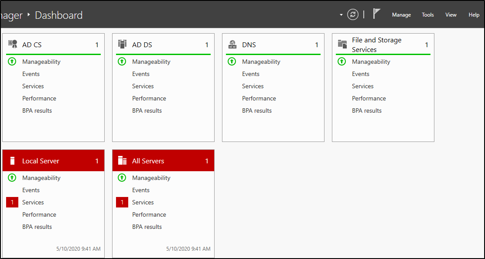
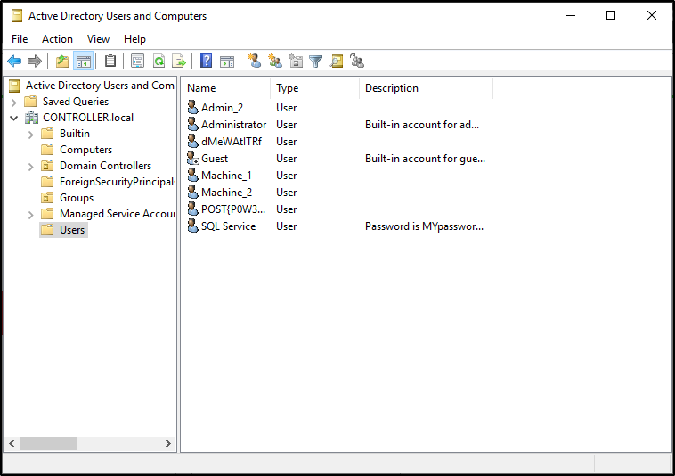

Enumeration w/ Server Manager
Because servers are hardly ever logged on unless its for maintenance this gives you an easy way for enumeration only using the built in windows features such as the server manager. If you already have domain admin you have a lot of access to the server manager in order to change trusts, add or remove users, look at groups, this can be an entry point to find other users with other sensitive information on their machines or find other users on the domain network with access to other networks in order to pivot to another network and continue your testing.
The only way to access the server manager is to rdp into the server and access the server over an rdp connection
We'll only be going over the basics such as looking at users, groups, and trusts however there are a lot of other mischief that you can get your hands on in terms of enumerating with the server manager
This can also be a way of easily identifying what kind of firewall the network is using if you have not already enumerated it.
Connect to the VM w/ RDP:
Enumeration w/ Server Manager -
This is what Windows Server Manager will look when you first open it up the main tabs that will be most interesting are the tools and manage tabs the tools tab is where you will find most of your information such as users, groups, trusts, computers. The manage tab will allow you to add roles and features however this will probably get picked up by a systems admin relatively quick.
Dont worry about the AD CS, AD DS, DNS, or File and Storage Services these are setup for exploitation of the active directory and dont have much use for post-exploitation
Navigate to the tools tab and select the Active Directory Users and Computers
This will pull up a list of all users on the domain as well as some other useful tabs to use such as groups and computers
Some sys admins dont realize that you as an attacker can see the descriptions of user accounts so they may set the service accounts passwords inside of the description look into the description and find what the SQL Service password is
{kind=link}
{kind=link}